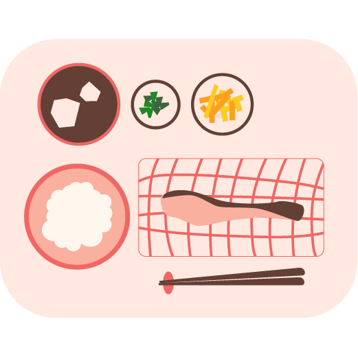

あなたのとなりに"あい"がある
誰もが心豊かに暮らせる街をめざして...
ABOUT
私たちについて
私たちは、介護を通じて、
誰もが住み慣れたわが家で、
自分らしく安心して暮らせるように、みなさまの毎日を支えたいと思っています。
「助け合い」から始まった私たちの想いを、
一人ひとりに寄り添う支援とともに、
これからも広げていきます。
SERVICE
サービスの紹介
-
- たすけあい訪問 自費
- 海老名市在住の方は、年齢に関係なくご利用いただけるサービスです。 ヘルパーがご自宅に伺い、掃除・洗濯・調理・買い物・通院介助・散歩介助・話し相手などをさせていただきます。認定対象外の病気・病弱でお困りの方、障がいをお持ちの方でも、ご利用可能です。
-

- 訪問介護/介護予防訪問介護 介護保険
- 海老名市在住で要介護認定・要支援認定を受けた方が対象のサービスです。 ヘルパーがご自宅に伺い、自立した生活が行えるよう、身体介護や生活援助など身のまわりのお世話をさせていただきます。
-
- 居宅介護支援 介護保険
- 原則、海老名市在住で要介護認定を受けた方が対象のサービスです。 ケアマネジャーによるケアプランの作成や介護保険更新申請の援助、その他施設や福祉用具、住宅改修などのご利用手配などを行います。